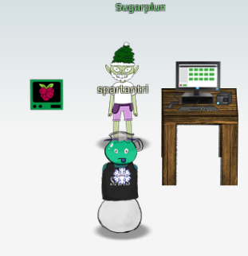
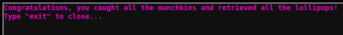

Linux Primer
This challenge requires to perform a serie of tasks in the linux command line

task 1
Perform a directory listing of your home directory to find a munchkin and retrieve a lollipop!
elf@fc41807707ff:~$ ls
HELP munchkin_19315479765589239 workshop
task 2
Now find the munchkin inside the munchkin.
elf@fc41807707ff:~$ cat munchkin_19315479765589239
munchkin_24187022596776786
task 3
Great, now remove the munchkin in your home directory.
elf@fc41807707ff:~$ rm munchkin_19315479765589239
task 4
Print the present working directory using a command.
elf@fc41807707ff:~$ pwd
/home/elf
task 5
Good job but it looks like another munchkin hid itself in you home directory. Find the hidden munchkin!
elf@fc41807707ff:~$ ls -a
. .. .bash_history .bash_logout .bashrc .munchkin_5074624024543078 .profile HELP workshop
task 6
Excellent, now find the munchkin in your command history.
elf@fc41807707ff:~$ history|grep munchkin
1 echo munchkin_9394554126440791
3 cat munchkin_19315479765589239
4 rm munchkin_19315479765589239
8 history|grep munchkin
task 7
Find the munchkin in your environment variables.
elf@fc41807707ff:~$ env |grep munchkin
z_MUNCHKIN=munchkin_20249649541603754
task 8
Next, head into the workshop.
elf@fc41807707ff:~$ cd workshop
task 9
A munchkin is hiding in one of the workshop toolboxes. Use "grep" while ignoring case to find which toolbox the munchkin is in.
elf@fc41807707ff:~/workshop$ grep -i munchkin *
grep: electrical: Is a directory
toolbox_191.txt:mUnChKin.4056180441832623
task 10
A munchkin is blocking the lollipop_engine from starting. Run the lollipop_engine binary to retrieve this munchkin.
elf@fc41807707ff:~/workshop$ ls -al lollipop_engine
-r--r--r-- 1 elf elf 5692640 Dec 10 18:19 lollipop_engine
elf@fc41807707ff:~/workshop$ chmod +x lollipop_engine
elf@fc41807707ff:~/workshop$ ./lollipop_engine
munchkin.898906189498077
task 11
Munchkins have blown the fuses in /home/elf/workshop/electrical. cd into electrical and rename blown_fuse0 to fuse0.
elf@fc41807707ff:~/workshop$ cd electrical/
elf@fc41807707ff:~/workshop/electrical$ mv blown_fuse0 fuse0
task 12
Now, make a symbolic link (symlink) named fuse1 that points to fuse0
elf@fc41807707ff:~/workshop/electrical$ ln -s fuse0 fuse1
task 13
Make a copy of fuse1 named fuse2.
elf@fc41807707ff:~/workshop/electrical$ cp fuse1 fuse2
task 14
We need to make sure munchkins don't come back. Add the characters "MUNCHKIN_REPELLENT" into the file fuse2.
elf@fc41807707ff:~/workshop/electrical$ echo "MUNCHKIN_REPELLENT" >> fuse2
task 15
Find the munchkin somewhere in /opt/munchkin_den.
elf@38049d8f110c:/opt/munchkin_den$ find . |grep -i munch
./apps/showcase/src/main/resources/mUnChKin.6253159819943018
task 16
Find the file somewhere in /opt/munchkin_den that is owned by the user munchkin.
elf@38049d8f110c:/opt/munchkin_den$ ls -Ral |grep munchkin
-rw-r--r-- 1 munchkin munchkin 0 Dec 10 18:20 niKhCnUm_9528909612014411
task 17
Find the file created by munchkins that is greater than 108 kilobytes and less than 110 kilobytes located somewhere in /opt/munchkin_den.
elf@38049d8f110c:/opt/munchkin_den$ find . -size +108k -size -110k
./plugins/portlet-mocks/src/test/java/org/apache/m_u_n_c_h_k_i_n_2579728047101724
task 18
List running processes to find another munchkin.
elf@38049d8f110c:/opt/munchkin_den$ ps -fea
UID PID PPID C STIME TTY TIME CMD
init 1 0 0 01:09 pts/0 00:00:00 /usr/bin/python3 /usr/local/bin/tmuxp load ./mysession.yaml
elf 19811 19808 0 02:03 pts/2 00:00:00 /usr/bin/python3 /14516_munchkin
elf 21649 319 0 02:04 pts/3 00:00:00 ps -fea
task 19
The 14516_munchkin process is listening on a tcp port. Use a command to have the only listening port display to the screen.
elf@38049d8f110c:/opt/munchkin_den$ netstat -antp
(Not all processes could be identified, non-owned process info
will not be shown, you would have to be root to see it all.)
Active Internet connections (servers and established)
Proto Recv-Q Send-Q Local Address Foreign Address State PID/Program name
tcp 0 0 0.0.0.0:54321 0.0.0.0:* LISTEN 19811/python3
task 20
The service listening on port 54321 is an HTTP server. Interact with this server to retrieve the last munchkin.
elf@38049d8f110c:/opt/munchkin_den$ curl 0.0.0.0:54321
munchkin.73180338045875
task 21
Your final task is to stop the 14516_munchkin process to collect the remaining lollipops.
elf@38049d8f110c:/opt/munchkin_den$ kill -9 19811
